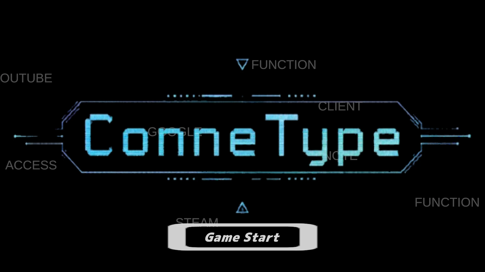

GAME WORKS ／ 長屋晴太の作品
ConneType
2Dタイピングゲーム
制限時間内に出てきた文字をタイピングし続けて打ち切れ！
TECH POINT（技術のポイント）
ゲームの中心になるゲームシーンを担当。初めて Unity に触る後輩がいたため unitypackage で各シーンを統合し、1週間で大きな問題なくまとめた。
- DATE（制作時期）
- 2026/06
- TEAM（人数）
- 4人チーム
- ROLE（担当）
- タイピングシステム プロジェクト統合
- TOOLS（使った技術）
- Unity ／ C# ／ Github